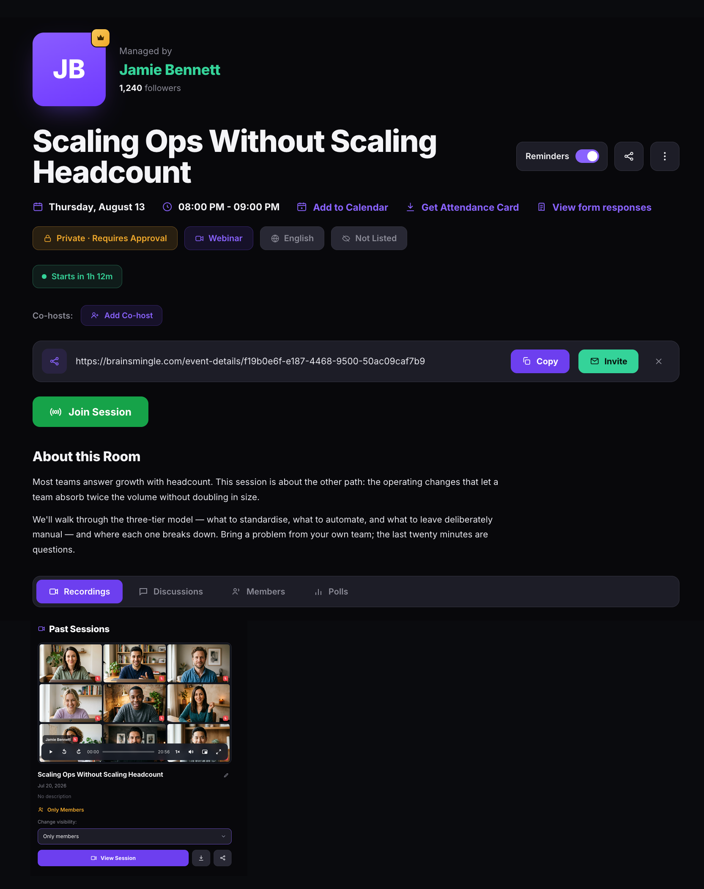
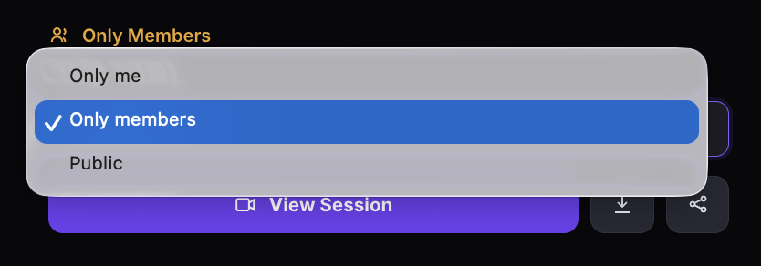
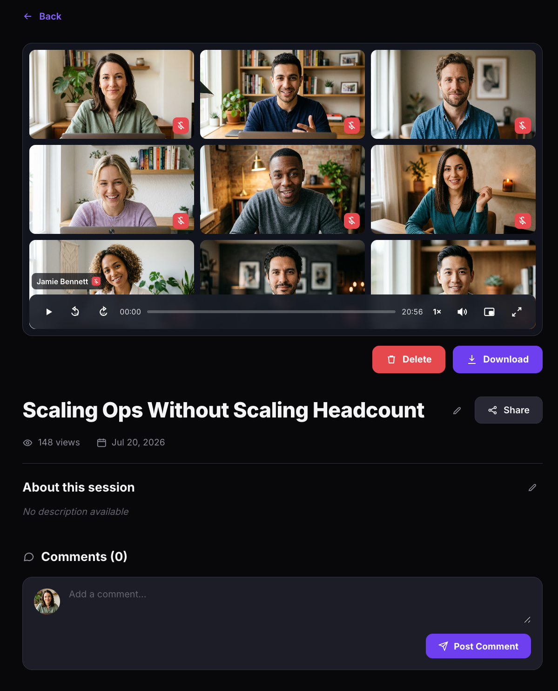
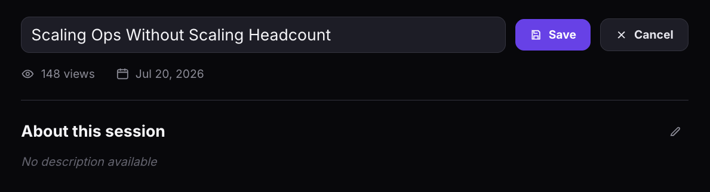

Manage recordings
Access, view, download, share, and delete recordings from your video sessions. Change recording visibility to control who can watch. Recordings are available for scheduled video sessions, instant drop-in calls, and webinars. Speed networking rooms do not support recording.
Before you get started
- You must have an Admin or Moderator role to manage recordings.
- Recordings are created automatically for webinars when the broadcast starts. For video sessions and instant calls, recording must be started from the call toolbar.
- Speed networking rooms do not support recording.
Session types that support recording
Recording is available for the following session types:
- Scheduled video sessions — start recording from the call toolbar during the session. See Schedule a live session.
- Instant drop-in calls — start recording from the call toolbar during the call. See Start an instant drop-in call.
- Webinars — recording starts automatically when you start the webinar broadcast. See Host a webinar.
Please note: Speed networking rooms do not support recording. Only video sessions, instant calls, and webinars generate recordings.
Access your recordings
- Navigate to the room detail page for the session that was recorded.
- Click the Recordings tab.
- Each recording card shows the session title, date, a video player preview, and the current visibility setting.

Change recording visibility
- On the recording card, find the Change visibility dropdown.
- Select one:
- Only me — only you can see the recording.
- Only members — only community members can view it.
- Public — anyone with the link can view it.

View, download, and share a recording
- On the recording card, click View Session to open the full recording page.
- On the recording page, you can:
- Play the recording directly in the video player.
- Click Download to save the recording locally.
- Click Share to share the recording link.
- Click the edit icon next to the title to rename the recording.
- Click the edit icon next to About this session to update the description.


Delete a recording
- On the recording page, click Delete.
- A confirmation dialog warns that this action is irreversible — the recording, its comments, views, and all associated data will be permanently deleted and cannot be recovered.
- Type "I confirm" in the text field.
- Click Delete recording permanently. To cancel, click Cancel.

Please note: Recording deletion is irreversible. There is no way to recover a deleted recording.
Recordings and room deletion
If a room has recordings, the Delete Room option is disabled until all recordings are removed. You must delete all recordings before you can delete the room. See Delete a room or recording for the full steps.
Tip: Download any recordings you want to keep before deleting them, as this action cannot be undone.